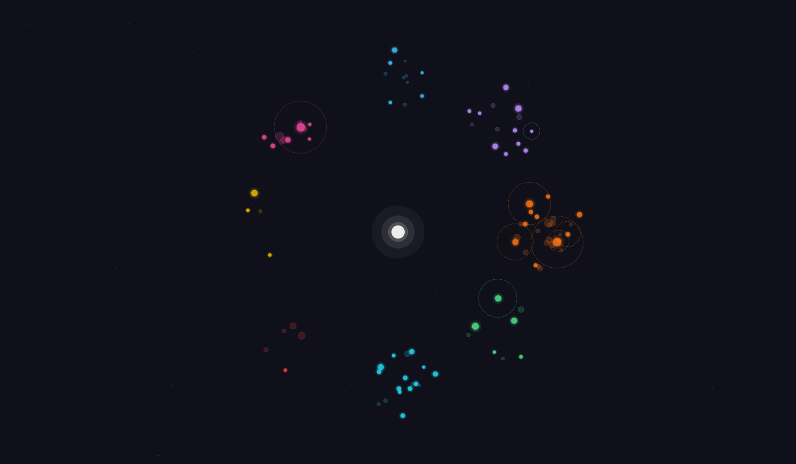

A personalized operating system for Claude Code — visualized

Claude Code is an AI agent that lives in your terminal. You talk to it in plain English. It reads your files, writes code, runs commands, and builds things. Out of the box, it's a powerful tool — but it doesn't assume what you'll use it for. That's up to you.
Over eight weeks, one person used Claude Code to build 103 custom skills — reusable instructions that extend what the system can do. Email automation, weather briefings, voice interaction, LaTeX documents, data analysis, music generation, screen recording, browser automation, and more. The skills accumulated into something that started to feel less like a tool and more like a personal operating system — a system shaped entirely by one person's needs, running on a base that never changed.
This page is a data portrait of that system. It asks where the instinct to call it an "operating system" came from, and whether the word is earned. It traces the system's growth, analyzes its structure, and maps it against ideas from the foundational papers of computing — Per Brinch Hansen on OS architecture, Doug McIlroy on Unix philosophy, and John Tukey on exploratory data analysis. Along the way, it asks a simpler question: what happens when someone with a scientific temperament gets a tool with no fixed mode of operation, and just runs with it?
In 1970, Per Brinch Hansen published a short paper called "The Nucleus of a Multiprogramming System." A multiprogramming system, in his context, is simply a computer system that can run multiple programs. Hansen observed that most such systems at the time came with a fixed way of working baked in — batch processing, or time-sharing, or real-time control. If you needed a different way of working, you were stuck. His words: "the user often finds it hopeless to modify an operating system that has made rigid assumptions in its basic design about a specific mode of operation."
His solution was to separate the base from what runs on top. Build a minimal core — a nucleus — that provides only the fundamental ability to create programs, let them communicate, and control their execution. Make no assumptions about what those programs will do. Then let each installation build its own system on top, tailored to its own needs. The nucleus stays the same. The systems built on it can be completely different.
Claude Code, as described in Anthropic's official documentation, is "an agentic coding tool that reads your codebase, edits files, runs commands, and integrates with your development tools" and is "composable and follows the Unix philosophy." It provides a set of built-in capabilities — reading files, writing files, running shell commands, searching content, fetching web pages — and a mechanism called skills for users to extend it. A skill is a SKILL.md file placed in a directory. Claude Code loads it, and it becomes part of what the system can do. Skills can bundle code, reference documents, and scripts. Users can create new skills, and Claude Code itself can write new skills — writes to the skills directory are automatically approved.
This is Hansen's pattern. The base provides primitives. Users build on top. The base doesn't change. Different users build different systems. One user's Claude Code might have 99 skills covering email, LaTeX, weather briefings, data science, and voice interaction. Another's might have 10 skills focused entirely on web development. Same nucleus. Different operating systems.
Not every AI tool follows this pattern. VS Code is a text editor. Adding AI to it — as Copilot or Cursor does — doesn't change that. The editor is still the center. The AI lives in a sidebar, constrained by the assumption that you're editing code. You can add extensions, but the mode of operation stays fixed: you write code in an editor, and the AI helps. Hansen would recognize this as a system with rigid assumptions baked into its basic design.
Claude Code and OpenAI's Codex take a different path. Both are terminal-native AI agents that grew naturally from the chat interfaces people already use — Claude in the browser became Claude Code in the terminal, ChatGPT became Codex. Both come with their respective subscriptions, no separate purchase. And the terminal, unlike an IDE, makes no assumptions about what you'll do. It's a blank prompt. The mode of operation is defined by what you build on it.
But two features really set Claude Code apart from the rest — including Codex. One is called channels, and the other is called remote control.
Channels let external systems push information into a running Claude Code session asynchronously — without Claude asking for it. This is different from regular MCP servers, where Claude initiates the call and the server responds. With channels, the outside world initiates. Much of the analysis and writing on this project was done through a voice system built with Claude Code to extend Claude Code — a phone-call-like interface where the user talks to Claude through a UI with a cute orange robot face that animates while speaking, with soft LED-like blue eyes. The conversation flows the way a natural human conversation does: either side can initiate, either side can interrupt, either side can change the subject. Papers were read aloud, ideas were debated, design decisions were argued — all through voice. That kind of interaction is impossible with other AI-assisted coding systems, where you type and wait for a response.
Remote control lets the user drive a local Claude Code session from a phone while the AI agent does serious computational work on the user's laptop. The laptop doesn't need the user physically present. Claude Code can spin up teams of agentic workers that emulate human experts — decomposing a problem, identifying root causes, proposing surgical fixes, changing code, running the new version, using browser automation to validate the result while recording the screen, producing a video, uploading it to Google Drive, and sharing the link with the user while they're out walking. The user approves from their phone. Claude Code commits and pushes to git. Then it moves on — writing LaTeX reports, running code on the laptop's GPU, downloading research papers, brainstorming the next steps with the user via phone texting. That's how 42,000 steps happen in a day while the work gets done.
Think about how it actually felt. You started by writing Python scripts in a terminal — every line was yours, every bug was yours. Then you discovered NumPy and stopped writing loops; the machine handled the math. Then you opened an IDE and stopped thinking about which files lived where. Then ChatGPT arrived and you stopped starting from a blank page — you described what you wanted in English and got code back. But you were still copying and pasting between a browser and an editor, so you moved to Cursor, where the AI lived inside the editor. Then Claude Code removed the editor entirely — you just talked to it in a terminal, and it read your codebase, wrote code, ran commands, spun up agents. Every step removed something you used to do manually. And then the obvious question: if all you're doing is talking to Claude Code, why do you need to sit in front of your computer to talk to it? You don't. That's remote control. That's the top of the ladder.
Each rung removes a constraint. The top rung removes the last one: physical presence.
The table below shows how these features compare across the current landscape of AI development tools.
| Feature | Claude Code | Codex | Cursor | VS Code |
|---|---|---|---|---|
| Interface | Terminal | Terminal | IDE + Sidebar | IDE + Sidebar |
| Custom skills | ✓ | ✓ | ✓ | ✗ |
| MCP servers | ✓ | ✓ | ✓ | ✓ |
| Hooks | ✓ | ✓ | ✓ | ✗ |
| File system access | ✓ | ✓ | ✓ | ✓ |
| Can write new programs | ✓ | ✓ | ✓ | ✓ |
| Remote control (local session from phone) | ✓ | ✗ | ✗ | ✗ |
| Channels (async push into session) | ✓ | ✗ | ✗ | ✗ |
| Mode of operation | User-defined | Mostly neutral | Code editor | Text editor |
The word "OS" showed up instinctively. There was no deliberate decision to call it that — it just felt like the right word for what the system had become. Hansen's 1970 paper helps explain why. The paper never directly defines what an operating system is, but it describes a concept space around the term — a set of principles that characterize how an OS relates to the base it runs on. The base should make no assumptions about what will be built on top of it. New systems should be buildable without modifying the base. Multiple modes of operation should coexist and be switchable dynamically. And the difference between an operating system and an ordinary program is not what it is, but what it has jurisdiction over. Claude Code's built-in tools make no assumptions about mode of operation. Skills are added as files without modifying Claude Code itself. Email, git, LaTeX, voice, data science, and weather skills all coexist and are available simultaneously, with the active mode shifting based on what the day demands. Each skill is just a program — but it has jurisdiction over its domain. The system maps closely to Hansen's concept space, and that proximity is what the instinct was detecting before there was language to describe it.
Anyone can take the same nucleus and build a completely different system on top. One person builds an email and voice workflow. Another builds a web development pipeline. A third builds a scientific computing environment. Same base. Different operating systems. The nucleus doesn't care what you build — it just provides the primitives and gets out of the way.
This system is one such build. 99 skills across eight domains — git workflows, media creation, writing and publishing, testing, dev workflow, AI research, infrastructure, and meta-tools for improving the system itself. All built over eight weeks by one person, on a nucleus that remained unchanged throughout. The system handles email, generates LaTeX documents, checks the weather with personalized running and walking strategy, produces music, analyzes data, manages a voice interface, and deploys presentations — all from the same terminal. The mode of operation is not "coding." The mode of operation is whatever the day demands.
One thing makes this different from any operating system that came before it. The system is also an agent. It doesn't just provide services and wait — it reads, reasons, writes code, makes decisions, and executes. The operating system and the operator are the same entity. That's what makes it an agentic OS.
Looks like the real agentic OS has stood up. The constellation below is its portrait.
Day one, the biggest problem was context. Claude couldn't remember anything between sessions, so the first skill built was a meta "remember" command — a way to persist facts across conversations. Around it, a cluster of dev workflow skills appeared: the basic tools needed to start working productively. A couple of writing skills — PDF and PPTX generation — and a few media skills rounded out the initial seed. The constellation began as a small, practical toolkit.
The next day, git skills came online. Version control is a natural extension of dev workflow — once you're building things, you need to track and share them. The blue cluster lit up, tightly orbiting the cyan dev workflow core.
Then came March 19th. Anthropic hosted a session about Claude Code skills. The talk acted as a catalyst — not because the specific advice was followed, but because it triggered conscious thinking about what skills could be. Most of the enterprise-oriented guidance was discarded. But the energy from that session fueled an explosion: the skill count nearly doubled in four days, jumping from 48 to 84.
Two entirely new categories emerged from that burst. Infrastructure and Ops appeared because the system had grown complex enough to need its own operational tooling — a bottoms-up necessity. You start doing things, realize you're limited by your infrastructure, and build tools to fix that. The Anthropic talk provided the push, but the need was already there.
Testing and Validation was the one category directly influenced by the talk. Anthropic spoke about getting agents to verify their own work, and that idea took root. Skills like behavioral-test-loop — which chains spec reading, browser testing, screen recording, and iterative fixing into a single loop — came from that direct inspiration.
Everything else in the explosion — the writing skills, the media tools, the git extensions — grew from the same bottoms-up process as before, just accelerated by conscious attention. The catalyst didn't change the method. It changed the tempo.
Andrej Karpathy described LLMs as "the kernel process of a new Operating System." Claude Code OS takes that literally — it's a personalized operating system built on top of Claude Code, which itself runs on an LLM. Skills are its processes — 97 custom commands. Plugins are kernel extensions — 22 modules that modify core behavior. Hooks are daemons — 7 shell scripts triggered by events. MCP servers are the I/O layer — device drivers connecting to external services like voice, messaging, and browsers. Channels are the interrupt handlers — letting the outside world push events in asynchronously.
Not all 97 skills see active use. Some were experiments, some were outgrown, some solved a problem that no longer exists. 53 skills are actively used — these are the ones that survived daily practice. The constellation shows both: active skills glow bright, inactive ones are dimmed. The analysis sections below focus exclusively on the 53 active skills — the real operating surface of the system.
Each star's size reflects complexity — measured in lines of instruction. Its color encodes domain — git workflows in blue, media creation in purple, AI research in red, infrastructure in yellow. The heartbeat along the bottom traces the repo's pulse: 123 commits over two months, from an initial seed of 18 skills in Feb 2026 to 97 skills in April 2026 — what you see now.
Drag the timeline scrubber to watch the OS grow. The constellation assembles itself in the order the skills were built — revealing which domains came first, which grew fastest, and how the system's center of gravity shifted as new capabilities were added.
In 1978, Doug McIlroy wrote the foreword to the Bell System Technical Journal's Unix issue. He laid down four maxims: make each program do one thing well. Expect the output of every program to become the input to another, as yet unknown program. Design and build software to be tried early — don't hesitate to throw away the clumsy parts and rebuild them. Use tools in preference to unskilled help, even if you have to detour to build the tools.
This system follows all four — not by design, but by convergence. Each skill does one thing. Skills compose into chains that weren't planned when the parts were built. 97 skills were tried in eight weeks — 44 were thrown away, 53 survived. The skill-creator skill is a tool built to make tools, just as McIlroy prescribed. The architecture arrived at Unix philosophy from the bottom up, through practice, not through reading the paper.
McIlroy also wrote: "intelligently applied computing technology can compress jobs that used to be big to a manageable size." In 1978, the technology was Unix itself. In 2026, it's Claude Code — an AI agent that turns one person with the right tools into a team. 53 active skills across eight domains, built and maintained by a single user. Small is beautiful, and AI makes it real.
The data portrait starring in this story is also a product of the same McIlroy philosophy — a customized workflow that resulted directly from intelligently applied computing technology.
Tukey predicted in 1962 that "graphs will certainly be increasingly drawn by the computer, without being touched by hands." Every visualization on this page was coded and drawn by Claude Code — but not just drawn. The constellation plot was Claude Code's design idea. The analytical decisions that shaped it further came from the human. The computer doesn't just draw the graphs. It also decides what graphs to draw.
McIlroy's second maxim: "expect the output of every program to become the input to another, as yet unknown program." Each slide shows one composite skill and the skills it calls. The composites are thin — just a sequence of calls. The complexity lives in the parts, not in the wiring. This is the Unix pipe pattern applied to an AI agent: the composite is the conductor, the isolated skills are the orchestra. Adding a new composition is trivial — one line per skill — because the parts were built to be independent. That independence is what makes composition cheap. To make programs composable, make them independent.
The right side is sparse. The left side is dense. That's the first thing the eye sees — and it tells the whole story. Composite skills are rare because you only compose when a real workflow demands it — and when they do appear, their bars are short. They're simple by nature: a composite skill just calls other skills in sequence, so the heavy lifting lives in the parts, not the wiring. Isolated skills are plentiful because you're building one tool per task, keeping each one focused.
Now look at the left side alone. Some bars are translucent with dashed outlines — those skills carry bundled code files, which inflates their line count. Toggle "Has Code" above to set them aside. What remains is the pure distribution: most bars are short, a few are long. That's a power law — the same shape you see in word frequencies, city sizes, earthquake magnitudes. The top-ranked items are disproportionately larger than the rest. In most systems, this shape emerges from amplification — popularity breeds popularity, size breeds size. Here, the mechanism is different. The fitted curve traces it.
Power laws usually emerge from amplification — the rich get richer, the popular get more popular, the best universities attract the best researchers who produce the best work. The outliers grow by accumulation. Here, the mechanism is inverted. The Unix philosophy is a constant downward pressure — make it simple, keep it small. Everything gets pushed towards the simple end. The few large skills aren't large because they attracted complexity. They're large because their tasks resisted simplification. The system tried to make them small and couldn't. Same shape, opposite cause.
What remains is a clean picture. Simple tools, used daily. A thin layer of composition on top. Complexity only where it was earned. Small is beautiful — and this is what it looks like.
Tukey wrote in 1962: "far better an approximate answer to the right question, which is often vague, than an exact answer to the wrong question, which can always be made precise." The power law fit is approximate — R² of 0.94, not 1.0. The distinction between useful and unused skills is approximate — marked by hand through a GTK dialog based on feel, not usage metrics or run counts. The composition network is approximate — keyword matching verified by human judgment. And yet the insights are real. Approximate answers to the right questions.
He also wrote: "if algebra and analysis cannot help us, we must press on just the same, making as good use of intuition and originality as we know how." The OS wasn't designed with algebra. It was designed with intuition — build what you need, keep it simple, throw away what doesn't work. The analysis came after, not before. The power law wasn't predicted — it was discovered. The Unix philosophy wasn't followed — it was recognized. The formalism confirmed what intuition already built.
The data portrait confirms a simple conclusion: keep going. The bottom-up approach works. 53 active skills, a power law distribution heavy-tailed towards simplicity, a thin composition layer, category evolution from dev workflow to infrastructure — all of it emerged from following instinct consistently over two months. McIlroy's four maxims, Schumacher's "small is beautiful," Tukey's empirical science — they converge on the same lesson: simplicity is not a constraint. It's a strategy.
The one new insight: the power law is generated by an inverted mechanism. Not "the rich get richer" but "the system resists complexity, and only what can't be simplified stays large." Default to small. Let the task prove it needs to be big. If it can't prove it, it isn't.
Claude is extraordinary at understanding natural language and generating code. Wolfram and Julia are extraordinary at verified, exact computation through decades of battle-tested packages. Alone, Claude can hallucinate APIs. Alone, Wolfram and Julia require you to know their syntax. Together, you get the best of both worlds: describe the physics in plain English, and the right skill constrains Claude's generation to the right framework. No hallucinated APIs, no syntax to memorize. One skill, one computation, same philosophy.
The next expansion is a scientific computing cluster — skills that connect Claude Code to Wolfram (via its MCP server) and Julia for symbolic and numerical computation. The peripheral infrastructure is already built: writing, publishing, version control, communication. Scientific computing fills the gap in the middle.
Every Claude Code user builds. A startup founder builds email skills and client workflows. A product manager builds PRDs and status reports. A YouTuber builds video scripts and upload pipelines. They use the system, it works, they move on. Very few stop and ask: what did I just build, and why does it look like this?
That question — and the refusal to accept a shallow answer — is what produced this project. Not the code. Claude Code wrote every line of HTML, CSS, JavaScript, and Python. Not the individual skills. Anyone with enough ambition can build 103 skills over eight weeks. What produced this project is a scientific temperament: the instinct to look at something you built and ask why it behaves the way it does.
That temperament is part of a broader toolkit — the same one a physicist brings to any problem. It has three parts. Scientific temperament — the drive to examine, not just use. First-principles analysis — the habit of tracing a question back to its foundations rather than accepting received explanations. And a combination of algorithmic and mathematical thinking — the ability to see structure, decompose systems, and reason about their behavior. Some of that toolkit is intrinsic. But the part that can be sharpened from the outside is reading primary sources.
Primary sources are the papers and textbooks that define a field, not the ones that extend it. Hansen didn't write about operating systems — he defined what a nucleus is. McIlroy didn't write about Unix tools — he defined the philosophy that generated them. Tukey didn't do data analysis — he defined what data analysis should be. These are not citations. They are thinking tools. They install mental models that show up later — on a walk, in a conversation, in a moment of recognition when a system you built maps onto a pattern someone described fifty years ago.
Two lessons, then. First: keep building with Claude Code. Whether that means small new projects or integrating it into a long-running one, the system rewards dedication. The abstraction ladder works — you direct, the machine implements, and the constraint of physical presence falls away. Second: bring the physicist's toolkit. Ask why, not just what. Trace ideas to their foundations. Read the papers that defined the field, not the blog posts that summarized them. The toolkit is what turns a collection of skills into an operating system — and a user into an architect.
McIlroy, M.D., Pinson, E.N., and Tague, B.A. (1978). UNIX Time-Sharing System: Foreword. The Bell System Technical Journal, 57(6), 1899–1904.
Tukey, J.W. (1962). The Future of Data Analysis. The Annals of Mathematical Statistics, 33(1), 1–67.
Hansen, P.B. (1970). The Nucleus of a Multiprogramming System. Communications of the ACM, 13(4), 238–242.